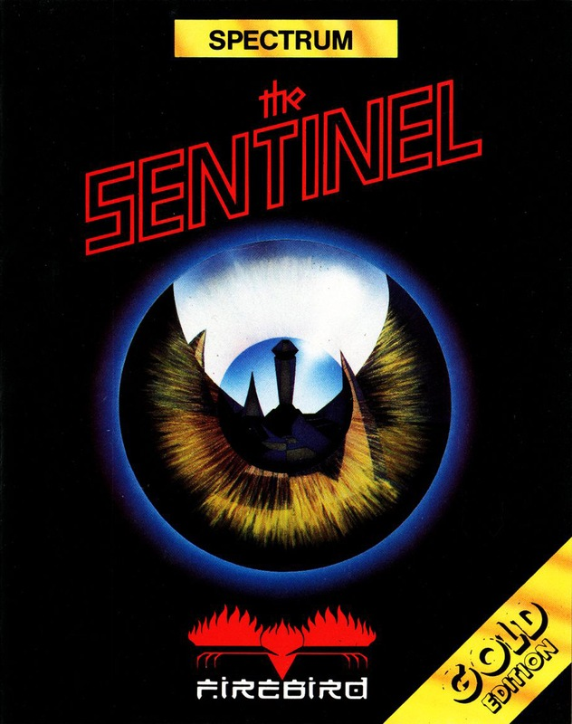
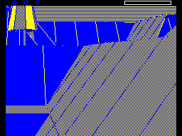
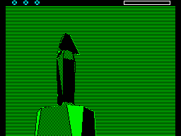
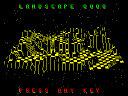

The Sentinel


{kind=link}

| Publisher: | Firebird |
| Price: | £9.95 |
| Year: | 1987 |
| Source: | CRASH, Issue 40 |

Absorption, says the dictionary, is a process whereby one object disappears through incorporation in something else; a sucking in of fluid, light or nutriment. It also means a mental engrossment — and generally, that is the aim of any good game. In The Sentinel, Firebird have pared absorption to its most elemental components, and produced a game which they hope is absorbing, and is about absorbing.
Think of 10,000 planets, merely a fraction of the known universe, but almost infinite by man’s reckoning. 9,999 of these worlds are under the sway of a supremely powerful malignant being — The Sentinel. What it is, or what its purpose might be, no one knows. What it does, however, is well understood. The Sentinel has slowly but inexorably travelled through the galaxy, absorbing the energies of all the worlds it touches upon, leaving on each one an image of itself and, on some levels, a host of attendant Sentries.

boulder, your robot gets a better view
of the landscape. But watch those trees
— one of them may turn into a Meanie
at any moment.
Now it is Earth’s turn. There is hope, though. The Sentinel can be attacked by reversing the process, and absorbing energy from it — world by world. The struggle is elemental — you against the Sentinel in a battle of wits played out on a 3D landscape where the chess pieces are your robots, boulders, trees, sentries and units of raw energy.
Where to begin? Any of the worlds may be chosen, as long as you have attained its entry code, thus you are forced to play planet by planet, and you are hyperspaced down to its surface. An aerial view is displayed, showing the relative positions of the Sentinel and its Sentries, before you are placed on the surface. The Sentinel always occupies the highest point of the landscape, you are transported to the lowest. Look around for a while, get the feel of this world. Until you start absorbing or expending energy, your enemies will remain inactive.
When you do, The Sentinel and its Sentries begin scanning the landscape, searching for squares containing more than one unit of energy — that’s likely to be you. If they can clearly see the square on which you stand, then they reduce its energy level by one unit at a time, creating a tree somewhere else in the process. In turn you can absorb the energy units of objects on the landscape, such as trees or Sentries, or even The Sentinel itself, as long as you can centre on the square they stand on, and then use that energy to create new objects.

stands high on his rock outcrop, commanding
the world below.
The point of this is to make new robots for yourself, transfer to the waiting robot, and then absorb the energy of the robot you have just left. In this way movement around the landscape is possible. Boulders can be stacked up to create higher vantage points for observing and attacking the positions of Sentries and The Sentinel.
A clear strategy is essential. You must hide from the absorption potential of the enemy, yet at the same time manoeuvre into positions of attack. Sometimes the action becomes frenzied. If a Sentry or The Sentinel can see the square you are standing on, a screen scanner warns, and there are five seconds to move before your energy is absorbed. Should the enemy see you, but find your square obscured by landscape, the scanner warns again, then a tree in a better vantage point for the job is transformed into a Meanie to flush you out of hiding. The Meanie rotates rapidly until it can see you, then forces you to hyperspace to a new random location, but probably one not to your liking.
Hyperspacing costs energy units, because the Meanie creates a new robot, transfers you to it, but leaves the old one behind, wasting energy. You may be able to re-absorb it later, however, if it hasn’t already been absorbed by The Sentinel.
Gaining fluency with the control of your circumstances is vital for those moments when all hell breaks loose. The view may be panned up or down, left or right through 360°, or snap-turns can be made. A sight may be turned on so that absorption, creation or a transfer may take place. And there are separate controls for creating trees, robots or boulders.
If you manage to defeat The Sentinel by absorbing all its energy, transfer to its position, the highest spot on that world, and hyperspace. You are given a new entry code for another world, another battle, another Sentinel.
CRITICISM

code for this one, which probably explains
why Cameron photographed it.
“This is a completely original concept, which has been superbly implemented to produce one of the best computer games ever. It’s deceptively simple, but, like Chess or any other game of a similar nature, an awful lot of thought must come into play to succeed in the higher levels. The gameplay is jam-packed with atmosphere and nail-biting tension that’s sure to keep you enthralled for a long time. The Sentinel looks surprisingly good; the landscape is excellently shaded — clear, uncluttered and with superb scrolling. Sound effects and tunettes are of a high standard, but it’s a shame that there aren’t a few more. This is state-of-the-art software. Buy it.”
BEN
“The Sentinel seems appears complex to an onlooker, yet it’s fiendishly simple. The landscape may look straightforward, but until you discover The Sentinel’s whereabouts and the location the computer sends you to, you’ll never know the real task which lies ahead. The fun of The Sentinel is the clever mix of occasions when you’re frantically pressing all buttons in the hope of escape, and other times when slow, deep thought is needed to find an ideal place to attack from. The addictive qualities are increased greatly by the codes, meaning that you can come back to it months later and still go to the landscape where you left off, without having to go through the same old screens over again. The Sentinel defies all adjectives.”
PAUL
“They told me it would be good, but I didn’t expect anything like this. The Sentinel is brilliant. It’s a weird sort of game, not a shoot ’em up, more an absorb ’em up. The concept is not remotely like anything I’ve ever seen before, and one that is magnificent. If the graphics are jerky, the shading and the change colour option make up for that ten times over. The Sentinel is so playable that you go into it for the first time and come out in a trance!”
MIKE
COMMENTS
| Control keys: | S/D pan left/right, K/M pan up/down, A to Absorb, T, B and R to create Trees, Boulders and Robots respectively, H to Hyperspace, Q to Transfer |
| Joystick: | Kempston, Interface 2, Cursor |
| Use of colour: | Monochrome effect, but background colour-change option |
| Graphics: | Excellent line and cross-hatched shading creates solid 3D, the whole scrolling smoothly and fast |
| Sound: | Some tunes and limited but effective spot FX |
| Skill levels: | Effectively, you make your own |
| Screens: | 10,000 landscapes |
| General rating: | Highly playable and addictive, The Sentinel is one of those rare games that makes owning a computer a delight. |
| Presentation: | 90% |
| Graphics: | 93% |
| Playability: | 98% |
| Addictive qualities: | 96% |
| Value for money: | 95% |
| Overall: | 97% |